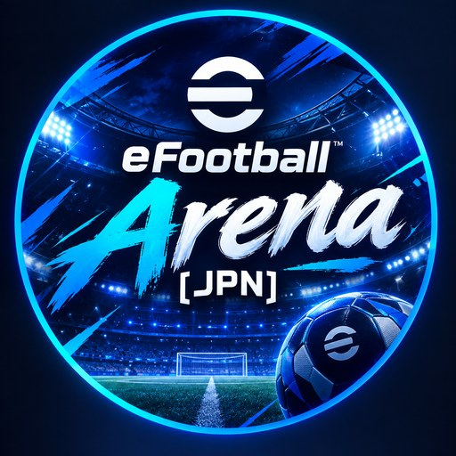
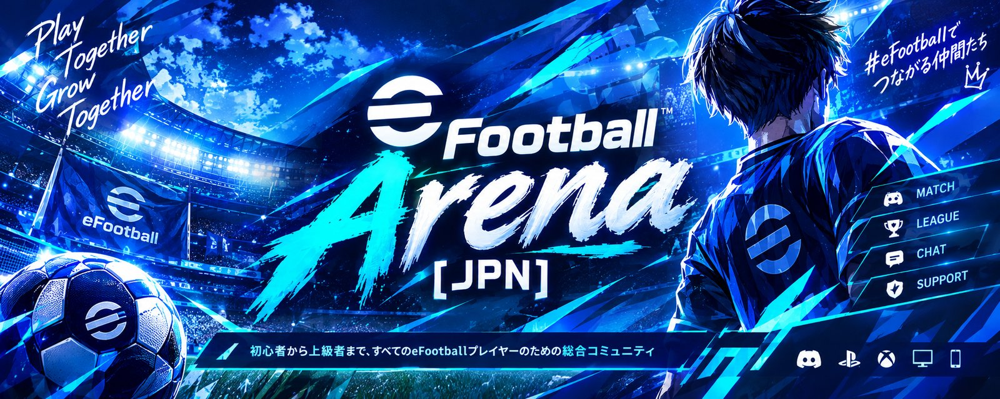

eFootball ARENA [JPN]フレマ・対戦マッチング、スカッド相談、コミュニティ大会、サッカー雑談まで。eFootball Arena [JPN] は、初心者から上級者までが集まる日本語コミュニティです。立ち上げたばかりのサーバーだから、いま参加すればみんなで一緒に育てていけます。

対戦も、相談も、雑談も。ひとつのサーバーで。
まだメンバーが少ない今だからこそ、一人ひとりの参加がサーバーの熱量になります。
機種とDiv（実力）のロールを選べば、ぴったりの相手が見つかります。
初心者から上級者まで楽しめる、定期開催のコミュニティ大会。
みんなが楽しく遊ぶための、基本のお約束です。
参加前の疑問はこちらでチェック。
はい。招待リンクからDiscordで参加できます。
はい、立ち上げたばかりのサーバーです。だからこそ、いま参加すれば一緒にコミュニティを育てていけます。要望は運営サポートまでどうぞ。
もちろんです。初心者から上級者までが集まるコミュニティで、初心者向けの大会もあります。
スマホ、PlayStation、PC、Xboxのロールがあり、機種やDivに合わせて対戦相手を探せます。
スカッド相談フォーラムに投稿すると、選手起用やフォーメーションのアドバイスがもらえます。
ボタン一つで自分専用のプライベートチャンネルを作り、運営に直接相談できます。
参加は無料。質問があれば、チケットからいつでも運営に相談できます。